Applications reached Alif Bank's credit committee from a range of systems, and the decision itself was made inside the bank's shared CRM — a platform built for every department at once. KK Service is the committee's own tool: one queue, two clocks, and only the data a credit decision is actually made from.
The CRM works. It is also used by departments whose jobs have nothing to do with lending, which means a reviewer opening an application spends the first part of their attention deciding what on the screen is irrelevant to them. At volume, that tax is paid on every single case.
And there was no page that listed everything currently waiting, in the order it arrived. Time-to-decision for walk-in applications could not be measured at all. A specialist who had sent an application had no way to tell whether anyone had picked it up, so they sent it again. Some applications were simply lost.
I designed the committee's own workspace: the queue that fixed the order of work, the templated question system that replaced free-form requests, and the client profile a decision is built from — across four employee roles.
Applications were worked on as they surfaced, not in the order they arrived. That is fine at ten a day and impossible at a hundred: the person whose application slipped past everyone's attention waits exactly as long as it takes for someone to notice, and the bank finds out about it from the customer.
Building the page was the easy half. The hard half was making it stay accurate without anyone maintaining it, and making the order of work visible enough that fairness stops depending on attention.
Not in queue → In queue → Under review → Reviewed. Every transition fires off an action someone was already taking: sending the application, opening it, changing the decision status. No one maintains the queue, which is exactly why it stays true. A reviewed application deletes itself from the page and everything below moves up one.
Under every row runs a thin bar that shifts from white to red as the application waits. When a reviewer opens it, three things happen at once: the bar disappears, the row dims, and the reviewer's avatar appears in the participants column. The queue answers "what is nobody looking at right now" without anybody asking. Before, that question had no answer — you asked a colleague, or you guessed.
Each row carries «Under review: 16 min» and «Client waiting: 27 min». The second one is a person sitting in a branch. The first is how long we have had their application open. A form submitted online at two in the morning and a man in a chair three metres away look identical in a database — these two numbers are what make them different on screen, and they are the reason walk-in applications get cleared first.
The committee almost never asks something new — it asks the same twenty things. So the reply is a dropdown, not free text: four categories, twenty templates. Picking one changes the application's main status automatically, because the category already says what state the application is really in. And a validation rule that nothing before could enforce: while a mandatory to-do is open, the application cannot come back to the committee. That alone ended the habit of re-sending the same case.
The brief offered two ways to collect the front office's replies: a field under each to-do, or one shared field where answers are numbered. I took the first — at six open items, numbered answers get mismatched with their questions, and a credit decision is a bad place to find out. The second option didn't disappear, it got demoted: it became a plain comment field, deliberately not a to-do, so nobody reads it as another task to close.
Being precise about this matters, because it is the part of the project most easily overstated. The scoring model lives on the backend and I had no hand in it. What reaches the interface is a single block:
Four lines. My decision was where to put them: on the committee page, directly under the approve and decline buttons — beside the human decision rather than above it as a verdict to ratify, and never hidden behind the final outcome. A reviewer can agree with the engine or vote against it, and either way the disagreement is recorded. The rest of my work exists so that a human who wants to disagree has grounds to: the credit history, the documents, the property, the guarantors, the client's own record.
The queue sets the order of work; the client profile holds everything a decision is built from; the committee page is where that decision gets made and recorded.
Rows, not a board. Oldest at the top, newest at the bottom, so working top-down is the same as working fairly. Each row carries the client and their standing, the amount and product, who sent it, the date, both timers, and the avatar of whoever has the case open. The sidebar splits the work by how the client arrived — walk-in, online, returning — with waiting and archived cases kept apart from all three.
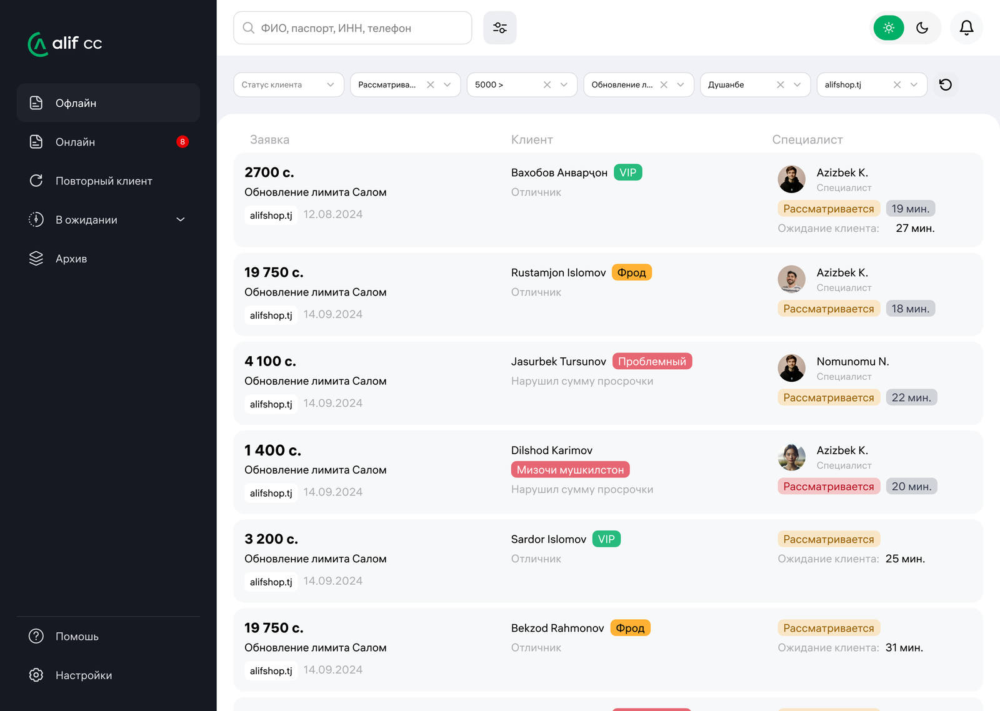
Committee, analysis, credit history, card statements, documents, scoring. Underneath sit the CRM, the national credit bureau, the Alif super-app and the bank's core system — none of which was built to answer a credit question. The tabs are the answer to what a reviewer sees of that pile, and in what order.
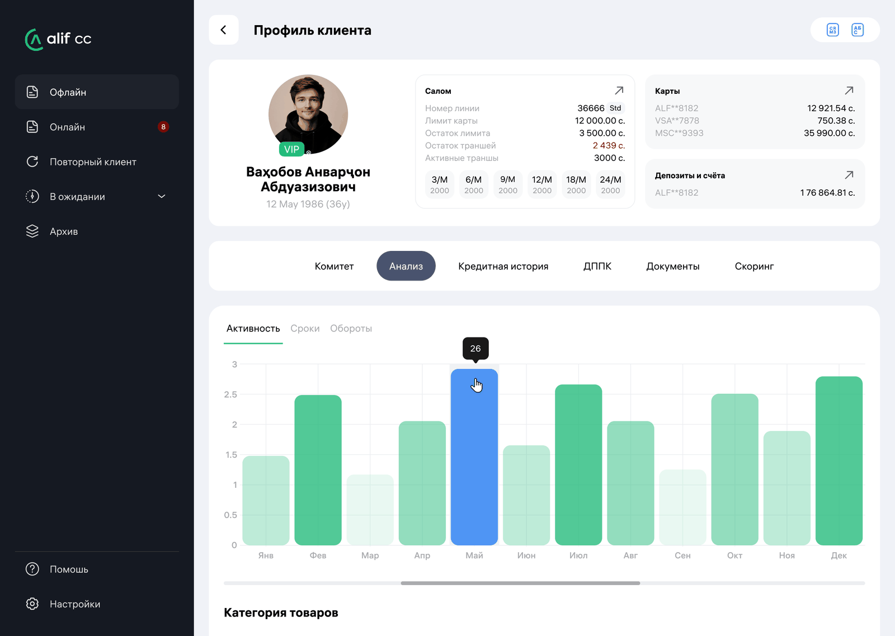
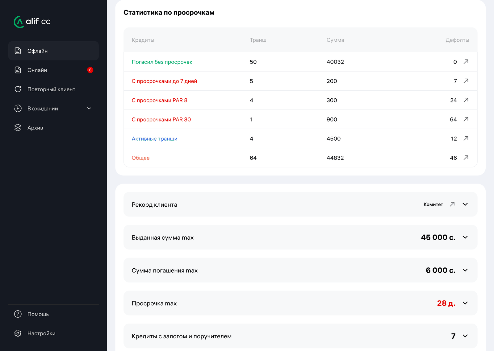
A client profile has no natural length — every section could reasonably be expanded. So the page ends in an accordion where exactly one section is open at a time: opening the next closes the last. The summary stays readable at a glance, and the full breakdown appears only where a reviewer deliberately asked for it.
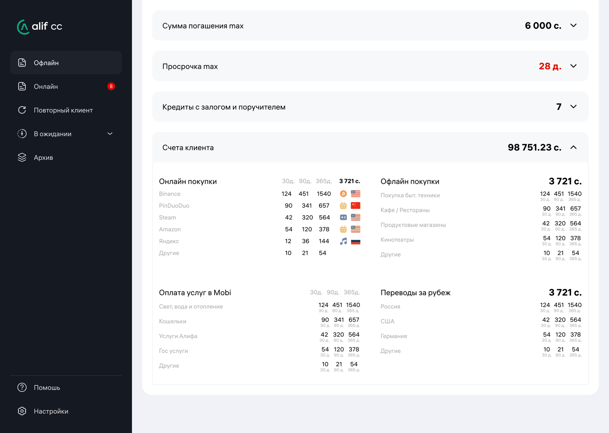
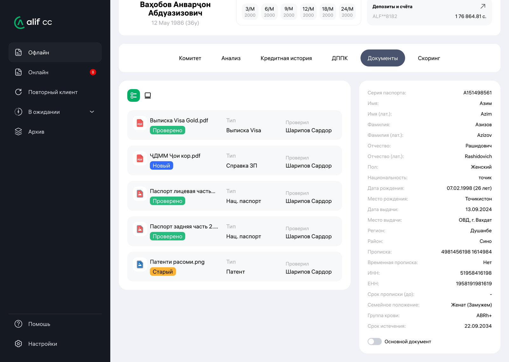
The vertical axis is what the client owed that month, the horizontal one is the calendar. Months with missed payments are enlarged and red, so a bad year is visible before anything is read. The source switches between Alif, the national bureau, or both — and the bureau view deliberately excludes Alif's own loans, because duplicating them would make a client look twice as indebted as they are.
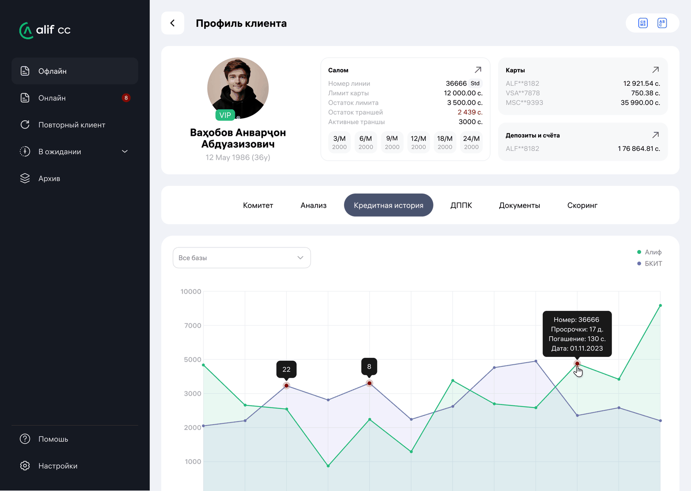
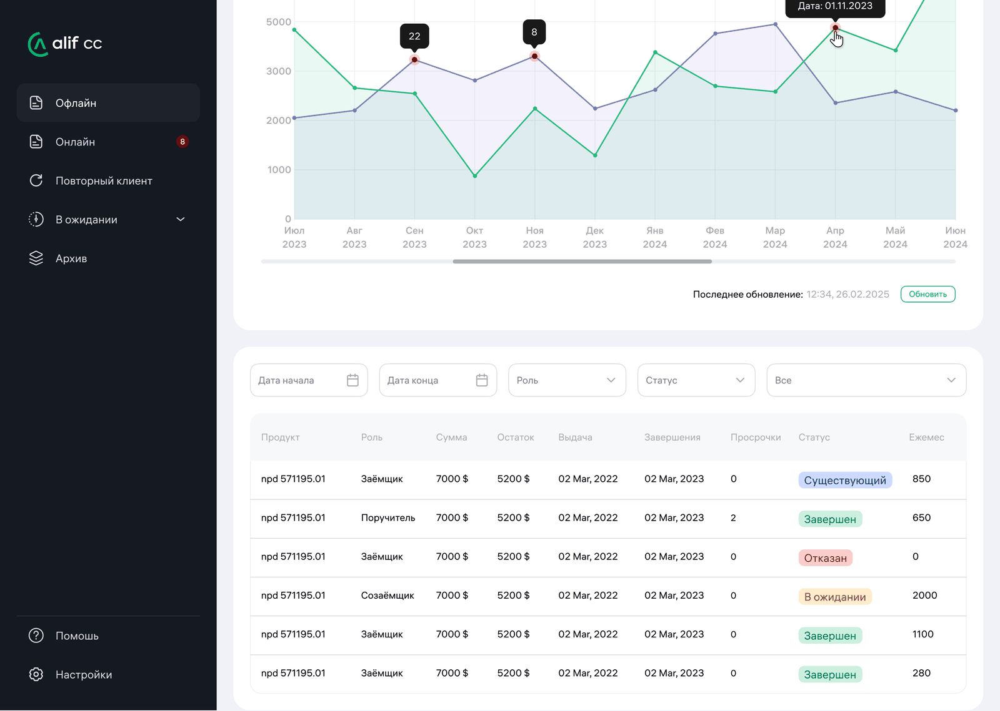
Opening a loan is the part I'd defend hardest. On the left, each due date with a tick, or a delay written out as its period, its length in days and the amount short. On the right, what the collections team actually wrote about this person. Numbers say a client was 13 days late; the note next to it says they called to say they would pay in the morning. Only one of those two tells you whether to lend again.
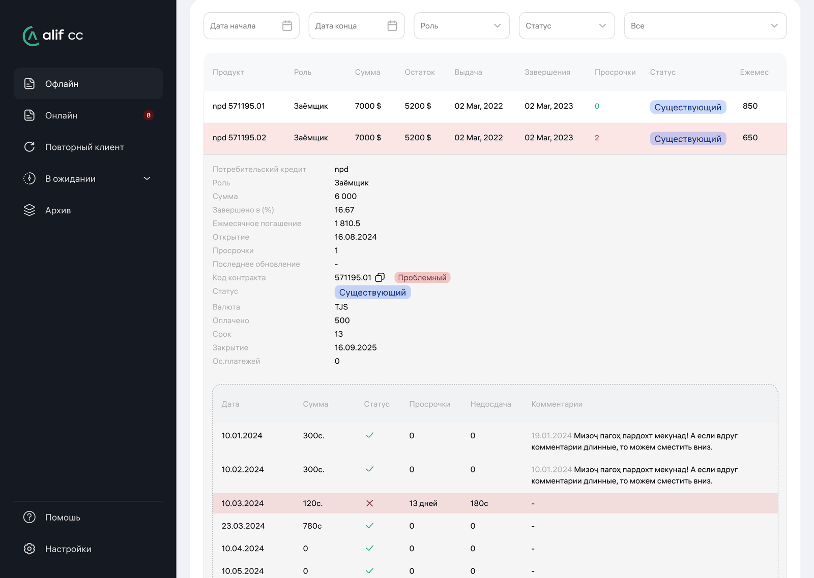
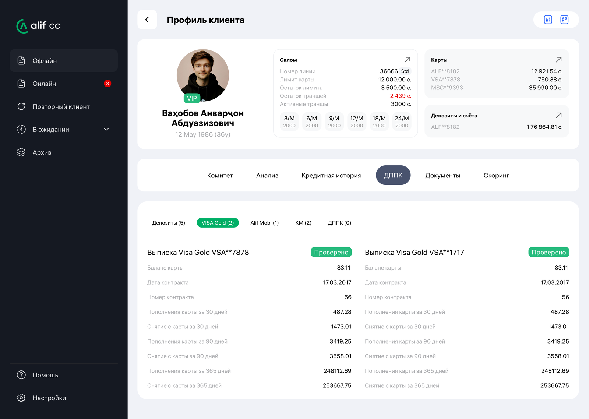
One screen holds the client's own words on the left — income, job, dependents, car, housing — and the money on the right: the invoice, the credit calculation, approve and decline. Everything the reviewer needs to argue with themselves is in the same field of view.
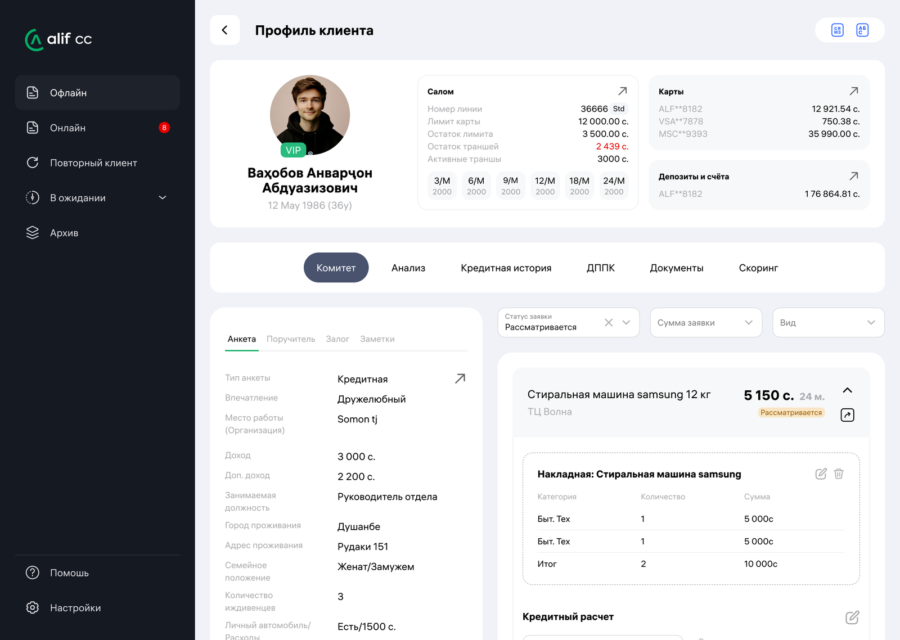
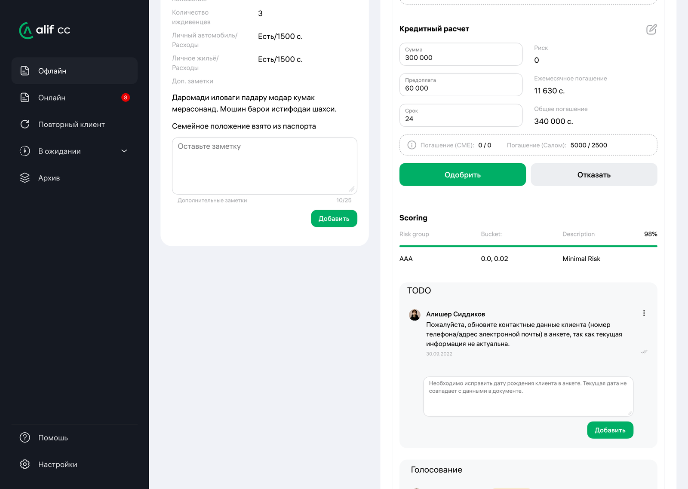
Three options: approve, approve with conditions, decline. The middle one is the interesting one, because it is where most real credit decisions live — and where a free-text comment would normally swallow them. Instead each condition is a field: a document type, or extra collateral with an amount, plus the reason in words. A conditional yes is therefore a checklist, not a sentence someone has to interpret later. Each member's vote appears above with their conditions numbered, and declining requires a written reason.
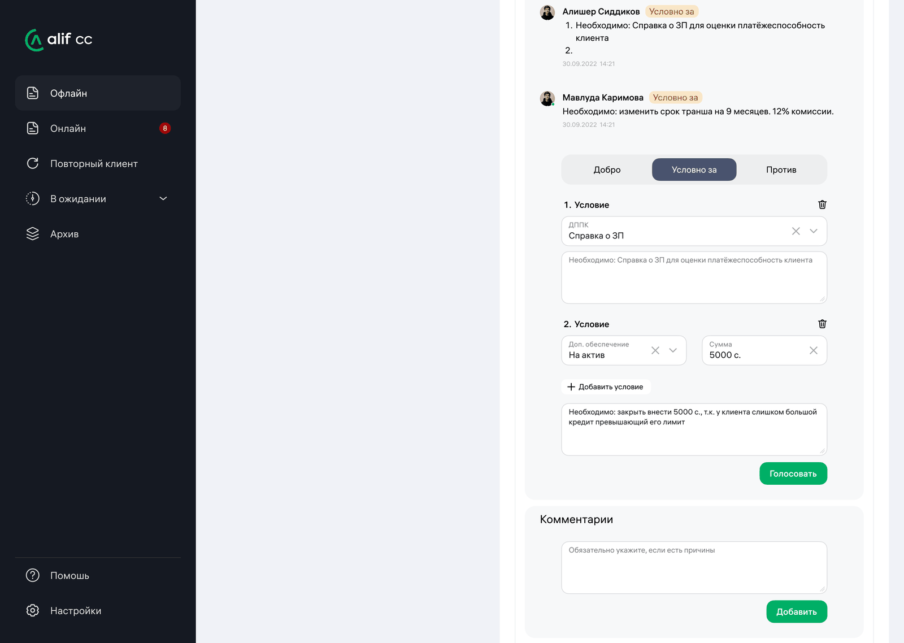
Four categories. Choosing a template writes the to-do and moves the application into the matching status in the same action.
of the engine's decisions proved right — the approved went on to pay, and the declined genuinely could not have. Across hundreds of criteria a human errs more often.
of credit decisions are resolved by the scoring engine, leaving the committee the cases that need judgement.
minutes to process an application filed in branch — roughly half the previous time, while the customer waits.
The campaign that nobody had to be rescued from
Alif runs four lending campaigns a year — two broad, two targeted, like the auto-loan push that drops the rate to 11%. Since 2020 every one of them has driven application volume past forecast, and every one ended the same way: staff pulled in from other departments to help the credit team clear the backlog. The first campaign after KK Service went live, that didn't happen.
The figures above come from the bank internally, shared with me by the head of the credit department. They aren't published anywhere I can link to, and I'd rather say so than present them as independently verifiable.
The full Figma file covers the queue, the committee page, the client profile and the admin panel — in light and dark themes.